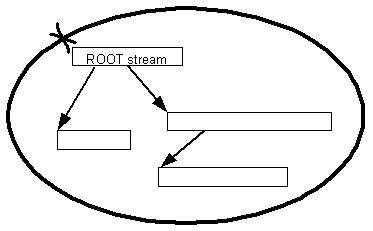

|
| |
A store is persistent if you can close it, re-open it, and then gain access to the same data.
A persistent store has the concept of a root stream. The root stream is, in effect, the starting point from which all others streams within the store can be found.
Before closing a persistent store you have created, you must set the ID of the root stream. After you have opened the persistent store, the first thing you must do is look up the root stream ID. You can then open the root stream and start reading data from the store.
Persistent stores are represented by the abstract class
CPersistentStore. This class, derived from
CStreamStore has the root stream ID and expands on the abstract
framework provided by CStreamStore, by adding behaviour for
setting and retrieving the root stream ID.
File stores are an example of persistent stores.
The following diagram shows the idea of a persistent store with a root stream:

Copyright ©2002 Symbian Ltd. 6.1-00174 |
|